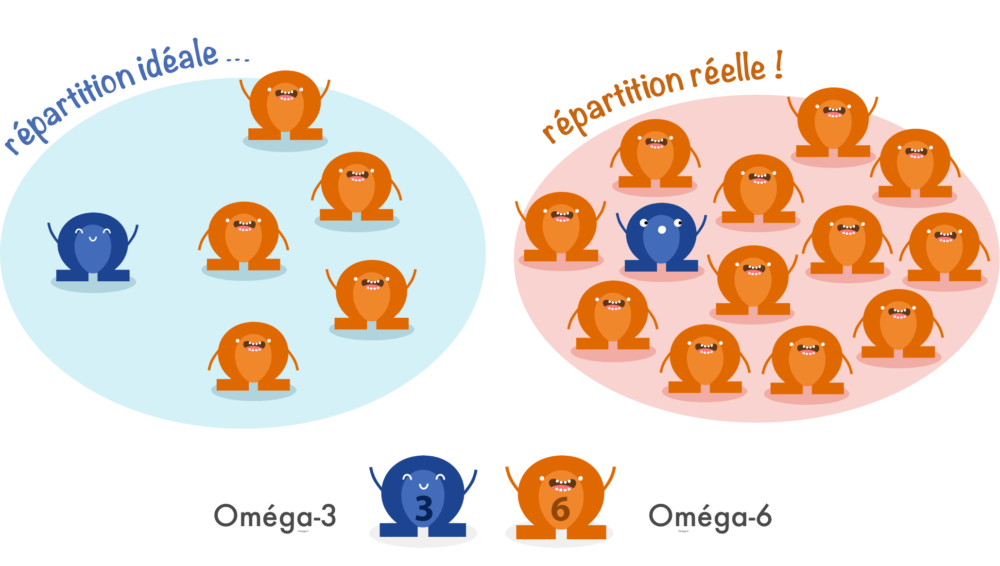
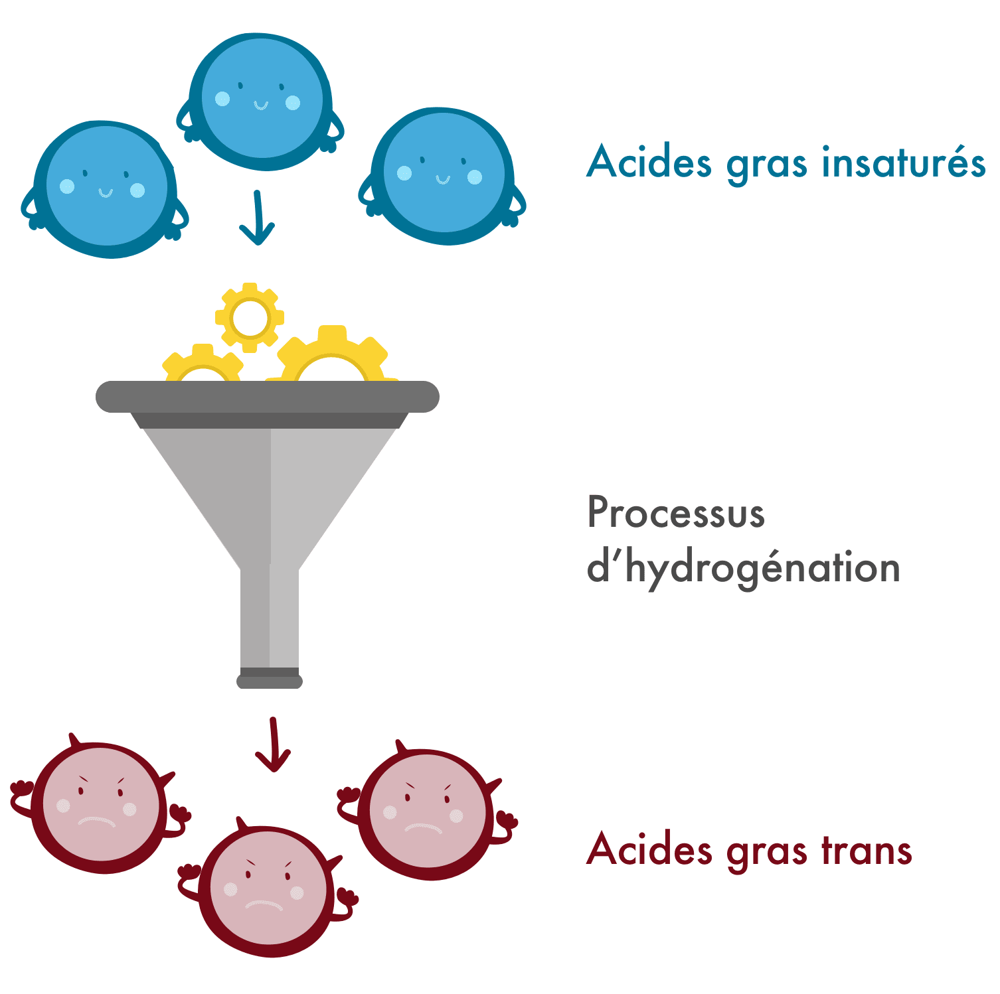
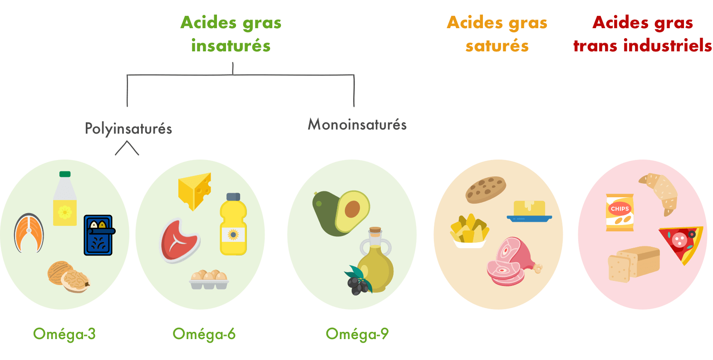

Les lipides sont en réalité ce qu’on appelle généralement les graisses. Il existe une forte confusion entre « graisses alimentaires » et « graisses corporelles », ce qui laisse à penser que les graisses alimentaires sont à l’origine de la prise de poids. Or, les matières grasses sont indispensables au bon fonctionnement de notre organisme et ont un rôle limité dans la prise de poids quand elles sont de qualité. Mais toutes les graisses ne se valent pas : il faut savoir choisir celles qui nous veulent du bien !
Les acides gras saturés : à limiter
- C’est quoi ? Il s’agit de graisses qui sont solides à température ambiante et qui résistent bien à la chaleur.
- On les trouve où ? Les acides gras saturés sont présents dans les graisses :
- D’origine animale (beurre, crème, fromage, viandes grasses, etc.)
- D’origine végétale (huile de palme, huile de coco). Celles-ci sont souvent utilisées dans la composition de biscuits sucrés ou salés comme les chips.
- C’est bien ou pas ? Les acides gras saturés ont longtemps été accusés de favoriser le “mauvais” cholestérol et le risque de maladies cardiovasculaires. Or, les graisses saturées sont indispensables à notre organisme : elles lui fournissent de l’énergie, des vitamines, et jouent un rôle dans la formation des membranes de nos cellules. Les graisses saturées seules ne sont pas problématiques. En revanche, l’excès de graisses saturées augmente le risque cardiovasculaire lorsqu’il est associé à d’autre facteurs :
-
- Alimentation riche en glucides. Une consommation importante de graisses saturées associée à une consommation importante de glucides (voir notre article sur les glucides), comme c’est le cas dans les régimes occidentaux traditionnels, favorise les maladies cardiovasculaires.
- Apport déséquilibré en graisses. Nous consommons aujourd’hui trop de graisses saturées et d’Oméga-6 par rapport aux Oméga-3. Ce déséquilibre contribue au risque cardiovasculaire.
-
Les acides gras insaturés
On distingue parmi les acides gras insaturés 3 catégories.
Les Oméga-3 : à favoriser
- C’est quoi ? Il s’agit d’acides gras dits « essentiels » car notre organisme ne sait pas les synthétiser lui-même. Ils doivent donc être apportés par l’alimentation.
- On les trouve où ? Les Oméga-3 sont principalement présents dans les poissons gras (thon, saumon, maquereaux, sardines, etc.), dans certaines huiles (colza, lin, noix), dans les graines (chia, lin, chanvre) et dans certains légumes (cresson, mâche, choux).
- C’est bien ou pas ? Les Oméga-3 possèdent de nombreuses propriétés et jouent un rôle crucial sur notre santé : ils contribuent au développement du cerveau, des muscles et des os. Ils sont aussi un allié indispensable dans la réduction de risques de maladies cardio-vasculaires et protègent notre système immunitaire. Malheureusement, nous ne consommons que 30% environ des apports conseillés en Oméga-3.
Les Oméga-6 : à limiter
- C’est quoi ? Comme les Oméga-3, les Oméga-6 sont des acides gras dits essentiels car nous ne savons pas les fabriquer nous-mêmes à partir des autres graisses que l’on consomme.
- On les trouve où ? Les aliments les plus riches en Oméga-6 sont la viande, les oeufs, le beurre, le fromage, les noix ou encore certaines huiles (tournesol, chanvre, pépins de raisin, soja, maïs, coton). On en trouve aussi en quantité dans de nombreux produits transformés (biscuits sucrés, chips, plats préparés, etc.).
- C’est bien ou pas ? Les Oméga-6 sont des graisses indispensables impliquées dans de nombreuses fonctions comme la reproduction, les défenses immunitaires ou encore le développement cérébral. Mais, tout comme les graisses saturées, nous les consommons aujourd’hui en excès par rapport à nos besoins, ce qui augmente le risque de maladies cardio-vasculaires. Notre consommation d’Oméga-6 est particulièrement déséquilibrée par rapport à notre consommation d’Oméga-3.
Le déséquilibre Oméga-3 / Oméga-6
Nous devrions consommer au maximum 5 fois plus d’Oméga-6 que d’Oméga-3. Mais nous en consommons 10 à 15 fois plus. La consommation excessive d’Oméga-6 nuit au métabolisme des Oméga-3 : ils se concurrencent entre eux et les Oméga-3 ne peuvent alors pas jouer leur rôle correctement. Ce déséquilibre contribue alors au développement des maladies cardiovasculaires.

Les Oméga-9 : à favoriser
- C’est quoi ? Ce sont des acides gras que nous pouvons fabriquer nous-mêmes à partir des graisses saturées que l’on consomme, et que l’on retrouve aussi directement dans certains aliments.
- On les trouve où ? Les Oméga-9 sont très abondants dans l’huile d’olive, l’huile de noisette, l’avocat, les noisettes, les amandes. Les graisses animales (viande, fromage, beurre) contiennent aussi des Oméga-9 en bonne quantité, mais ce ne sont pas les sources les plus intéressantes car elles contiennent aussi beaucoup d’acides gras saturés et d’oméga 6.
- C’est bien ou pas ? Les Oméga-9 jouent un rôle important dans la prévention du diabète et des maladies cardio-vasculaires. L’avantage est que nous sommes rarement en carence d’Oméga-9 car ils sont présents dans de nombreux aliments, et que notre organisme sait par ailleurs les fabriquer à partir d’autres sources de lipides.
Les acides gras « trans » : à fuir
- C’est quoi ? La grande majorité des acides gras trans de notre alimentation sont obtenus via un procédé industriel d’hydrogénation des acides gras insaturés. L’hydrogénation est une réaction chimique qui consiste à ajouter des molécules de dihydrogène au composé initial. Ce procédé permet de modifier la structure moléculaire des acides gras saturés, afin de leur donner une texture plus ferme et d’augmenter leur durée de conservation.

- On les trouve où ? Les acides gras trans sont présents dans de nombreux produits industriels ayant subi un procédé d’hydrogénation visant à solidifier les matières grasses végétales : plats préparés, pâtisseries et biscuits industriels, pâtes à tarte, certaines margarines, quiches, pizzas, biscuits apéritifs, pâtes à tartiner, barres de céréales, etc.
- C’est bien ou pas ? Les acides gras trans sont à éviter au maximum. Leur conséquence sur la santé est inquiétante, même consommés en faible quantité : ils augmentent considérablement le risque de maladies cardio-vasculaires.
Synthèse des différents types de lipides

En pratique
Nous ne consommons pas trop de gras aujourd’hui, mais nous consommons du mauvais gras ! Or, lorsqu’on les consomme de façon équilibrée, les graisses jouent un rôle indispensable pour une bonne santé et ne contribuent pas à la prise de poids.
Plutôt que de bannir le gras pour contrôler son poids, il vaut mieux accorder une plus grande vigilance à ses apports en glucides qui sont souvent trop importants (voir notre article sur les glucides).
Voici quelques règles à respecter pour rééquilibrer ses apports en graisses :
- Consommez chaque jour 2 cuillères à soupe d’huile de colza ou de lin première pression à froid, en vinaigrette ou en assaisonnement sur vos aliments
- Consommez du poisson gras 1 à 2 fois par semaine, en privilégiant les petits poissons qui contiennent moins de métaux lourds que les gros (sardines, maquereaux, anchois)
- Consommez chaque jour une poignée de noix et amandes au petit-déjeuner ou en collation
- Privilégiez les produits possédant le label Bleu-Blanc-Coeur. Ce label garantit la réintroduction des graines de lin dans l’alimentation du bétail et permet d’obtenir du lait, des œufs et la viande plus riches en Oméga-3 (voir notre article sur les labels).
- Réduisez votre consommation de viandes grasses à 1 fois par semaine maximum (morceaux gras de bœuf, porc, mouton, charcuterie hormis le jambon, peau de volaille) en limitant les produits issus d’animaux d’élevage intensif.
- Réduisez votre consommation de matières grasses laitières (fromage, beurre, crème, etc.), et consommez-les de préférence au petit-déjeuner ou au déjeuner
- Evitez les produits transformés, en particulier lorsqu’ils contiennent des « matières grasses hydrogénées » ou “matières grasses partiellement hydrogénées”
- Siri-Tarino, P. W., Sun, Q., Hu, F. B., & Krauss, R. M. (2010). Saturated fat, carbohydrate, and cardiovascular disease. The American journal of clinical nutrition, 91(3), 502-509.
- DiNicolantonio JJ, Lucan SC, O'Keefe JH. The Evidence for Saturated Fat and for Sugar Related to Coronary Heart Disease. Prog Cardiovasc Dis. 2016 Mar-Apr;58(5):464-72. doi: 10.1016/j.pcad.2015.11.006. Epub 2015 Nov 14. Review.
- Swanson D, Block R, Mousa SA. Omega-3 fatty acids EPA and DHA: health benefits throughout life. Adv Nutr. 2012 Jan;3(1):1-7. doi: 10.3945/an.111.000893. Epub 2012 Jan 5. Review.
- Nichols PD, McManus A, Krail K, Sinclair AJ, Miller M. Recent advances in omega-3: Health Benefits, Sources, Products and Bioavailability. Nutrients. 2014;6(9):3727–3733. Published 2014 Sep 16.
- Patterson E, Wall R, Fitzgerald GF, Ross RP, Stanton C. Health implications of high dietary omega-6 polyunsaturated Fatty acids. J Nutr Metab. 2012;2012:539426. doi: 10.1155/2012/539426. Epub 2012 Apr 5.
- Innes JK, Calder PC. Omega-6 fatty acids and inflammation. Prostaglandins Leukot Essent Fatty Acids. 2018 May;132:41-48. doi: 10.1016/j.plefa.2018.03.004. Epub 2018 Mar 22. Review.
- Étude individuelle nationale des consommations alimentaires 3 (INCA 3) - Avis de l’Anses - Rapport d’expertise collective.
- Simopoulos AP. The importance of the ratio of omega-6/omega-3 essential fatty acids. Biomed Pharmacother. 2002 Oct;56(8):365-79. Review.
- Simopoulos AP. An Increase in the Omega-6/Omega-3 Fatty Acid Ratio Increases the Risk for Obesity. Nutrients. 2016;8(3):128. Published 2016 Mar 2.
- DiNicolantonio JJ, O'Keefe JH. Importance of maintaining a low omega-6/omega-3 ratio for reducing inflammation. Open Heart. 2018;5(2):e000946. Published 2018 Nov 26. doi:10.1136/openhrt-2018-000946
- de Lorgeril M, Salen P. New insights into the health effects of dietary saturated and omega-6 and omega-3 polyunsaturated fatty acids. BMC Med. 2012;10:50. Published 2012 May 21.
- Bernard, Carole & Vanduffel, Steven & Ye, Jiang, 2019. "Optimal strategies under Omega ratio," European Journal of Operational Research, Elsevier, vol. 275(2), pages 755-767.
- Delgado GE, Krämer BK, Lorkowski S, März W, von Schacky C, Kleber ME. Individual omega-9 monounsaturated fatty acids and mortality-The Ludwigshafen Risk and Cardiovascular Health Study. J Clin Lipidol. 2017 Jan - Feb;11(1):126-135.e5. doi: 10.1016/j.jacl.2016.10.015. Epub 2016 Nov 10.
- Dhaka V, Gulia N, Ahlawat KS, Khatkar BS. Trans fats-sources, health risks and alternative approach - A review. J Food Sci Technol. 2011;48(5):534–541.
- Iqbal MP. Trans fatty acids - A risk factor for cardiovascular disease. Pak J Med Sci. 2014;30(1):194–197. doi:10.12669/pjms.301.4525
- Mozaffarian D, Aro A, Willett WC. Health effects of trans-fatty acids: experimental and observational evidence. Eur J Clin Nutr. 2009 May;63 Suppl 2:S5-21. doi: 10.1038/sj.ejcn.1602973. Review.
- Shah B, Thadani U. Trans fatty acids linked to myocardial infarction and stroke: What is the evidence? Trends Cardiovasc Med. 2019 Jul;29(5):306-310. doi: 10.1016/j.tcm.2018.09.011. Epub 2018 Sep 19. Review.